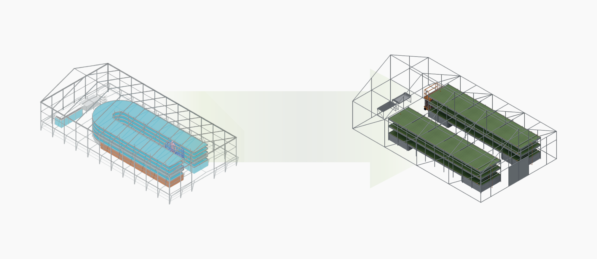

Product & Systemic Design · 2023
ProLemna
Systemic design for the sustainable cultivation of Lemna Minor in the livestock supply chain
The drive toward centralised industrialisation and globalisation of agri-food practices — paired with population growth — exposes critical issues in food access and the inefficient use of fodder for livestock.
In this scenario Lemna Minor, a plant native to Italy, emerges as a positive solution thanks to its phytodepuration properties: it converts wastewater into a nutrient-enriched resource and a local source of protein for swine farms still tied to global feed chains.
The project promotes a local and sustainable production model in animal nutrition, with a focus on social equity and ecological balance.

Section 01 · Insight
Lemna Minor — a native answer.
A floating aquatic plant present across Italian waters, Lemna Minor is one of the smallest flowering organisms in the world — and one of the most efficient at fixing nutrients from polluted water.
This insight became the entry point for the entire project: instead of treating swine effluents as a problem, use them as the substrate for a local, protein-rich crop.


Section 02 · Context
Digestion of swine wastewater in the livestock sector.
The Italian swine chain produces large volumes of nitrogen-rich slurry that today is mostly treated as waste. Mapped against current digestion practices, the system reveals dead-ends that Lemna can close — turning effluents into fertigation, feed and biomass.
The system map identifies entry points where Lemna ponds can be co-located with existing infrastructure, minimising land use while increasing resilience and circularity.


Section 03 · Global research
Lemnaceae production around the world.
In several cases, research directions have deviated from the initial trajectory, favouring the economic aspect — a shift away from the change the plant can offer in local feed supply, one of the variable costs companies often fail to support.
In the pig sector, water lentil plays a crucial role: it promotes a production model that embraces accessibility, social and ecological sustainability, going beyond the mere pursuit of profit.

Section 04 · Concept
The Pro Lemna hydroponic system.
A modular hydroponic unit grows Lemna directly on filtered wastewater. The design balances throughput, accessibility for maintenance and integration with existing farm logistics.
Ergonomic studies informed the height, reach and tooling of every interaction — from seeding to harvest.



Section 05 · Editorial
A layout system for a living document.
The thesis is laid out as a working manual: a recurring grid, type pairing and iconography make 200+ pages navigable without losing the depth of the systemic analysis.

Section 06 · Render
Demonstrative renders & flow paths.
Final renders show the system in context — its scale relative to farm infrastructure, the daily flow of work and the spatial relationship between ponds, harvesting deck and processing.

Section 07 · ProLemna Startup
From thesis to startup.
Starting as a bachelor thesis, ProLemna won the Range Rover Leadership Academy in 2024 and was incubated at 2i3T. As founder and Business Developer I translated the systemic approach into operational management — coordinating strategic vision, ensuring circularity, and developing business plans and financial analysis.
I also manage stakeholder relations, handling investors and partners through pitching, and oversee project management — guiding a multidisciplinary team towards market entry.